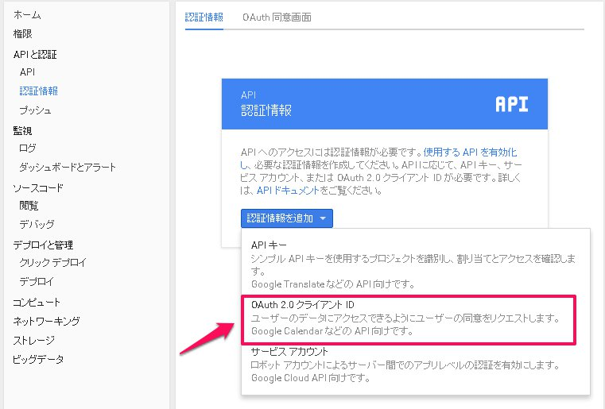
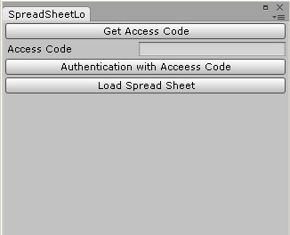

スプレッドシートからデータを読み込む
この記事でやっていることより、スプレッドシートからjsonデータを読み込むで紹介するやり方の方が手軽で簡単です。
概要
Unityのエディタからスプレッドシートのデータを読み込み、データを作ることを考える。
ただし、ゲーム実行中に読むのではなく、ビルド前に読み込むものとする。
ちなみにG2Uというスプレッドシートのデータを読み込むアセットが既にあるので、手軽に利用したい場合、これを利用した方が良い。
この記事はスプレッドシートのデータを自由に読み込みたい人向けの話。
本記事で作成したソースは以下を参照。
Github - spreadsheet-load-test
環境
Unity 5.1
Windows 7
GoogleのDeveloper Consoleに登録
SpreadSheetのAPIを使うにはOAuth2を利用してアクセスしなければならない。そのため、認証情報を登録する必要がある。
Google Developer Console にアクセスする。
左側の「認証情報」をクリックし、「OAuth2.0 クライアントID」を選択し、作成する。アプリケーションの種類は「その他」で良い。
これでクライアントID と クライアントシークレット が発行されるのでコピーして控えておく。

DLLを用意
OAuth2とSpreadSheetのAPIを利用するためのライブラリが用意されているので使用する。
google-gdata からGoogle_Data_API_Setup_*.msiをダウンロードして、インストールする。
インストールすると、C:\Program Files (x86)\Google\Google Data API SDK\Redist にDLLがあるのでこの中から、以下の5つを使用する。
- Google.GData.AccessControl
- Google.GData.Client
- Google.GData.Extensions
- Google.GData.Spreadsheets
- Newtonsoft.Json
この5つをUnityプロジェクト内に Plugins フォルダを作って放り込む。
一点、注意があり、Unityでこれらを使用してAPIにアクセスしようとすると、
「WebException: Error writing request: The authentication or decryption has failed.TLSException」
というエラーが出る。解決策として、Accessing Google APIs in Unityが参考になる。
アクセストークンとリフレッシュトークンを取得する
初回だけ、クライアントIDとシークレットから生成したURLにアクセスし、アクセスコードを取得する必要がある。
URLにアクセスすると、おなじみのアクセス許可のページが表示される。許可するとアクセスコードが取得できるので、これを使用してアクセストークンとリフレッシュトークンを要求できる。
アクセストークンは期限があるので、リフレッシュトークンを保存しておき、APIリクエストする際に更新する必要がある。
なので、リフレッシュトークンはEditorUserSettingsなどに保存しておくと良い。
APIアクセス
あとは基本的にGoogle Developers - Sheets APIに書いてあるAPIにアクセスすれば良い。
以上の処理を実装し、Unityのエディタ拡張でスプレッドシートにアクセスするものを作成したので、詳しい処理の流れは以下を参照とする。
アクセストークンやシークレットトークン、読み込むスプレッドシートのIDの情報を設定し、“Window->SpreadSheetLoader"から起動すると下図のようなウィンドウが表示される。
ここでアクセスコードを使った認証をし、指定したスプレッドシートの中身を読むことができる。
上のソースコードでは、指定したスプレッドシートのシート0番目の中身を表示するようになっている。
